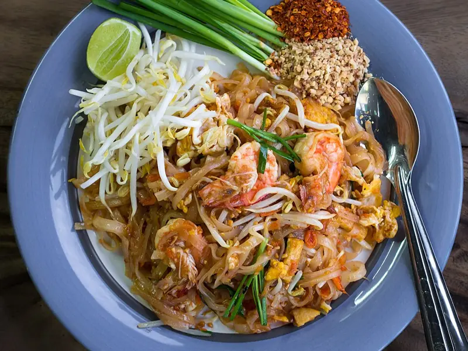

Фото: Takeaway, CC BY-SA 3.0

Жареная рисовая лапша с креветками
Рисовая лапша с креветками, яйцом и арахисом в стиле пад-тай
30 мин2 порц.757 ккал на порциюБ 41 · Ж 31 · У 75Азиатская кухня
Продукты на 2 порц.
- Рисовая лапша150 г
- Креветки250 г
- Яйцо куриное2 шт
- Чеснок2 зуб.
- Зелёный лук0,5 пучка
- Арахис2 ст. л.
- Соевый соус2 ст. л.
- Сахар1 ст. л.
- Лимон0,5 шт
- Кетчуп1 ст. л.
- Растительное масло2 ст. л.
- Острый перец молотый по желанию1 щеп.
Как готовить
- Залейте рисовую лапшу горячей водой на 8-10 минут, пока не станет гибкой, откиньте.
- Смешайте соевый соус, сахар, кетчуп и сок половины лимона.
- Креветки разморозьте и очистите. Арахис обжарьте на сухой сковороде 3 минуты и порубите.
- Разогрейте сковороду на сильном огне с маслом, обжарьте чеснок 30 секунд и креветки 2 минуты до розового цвета.
- Сдвиньте креветки к краю, вбейте яйца и перемешайте до хлопьев 1 минуту.
- Добавьте лапшу и соус, жарьте 2-3 минуты, перемешивая щипцами, пока соус не впитается.
- Добавьте зелёный лук, посыпьте арахисом и хлопьями чили.
Совет. Не передержите лапшу в воде: она дойдёт на сковороде, а размокшая слипнется комом.